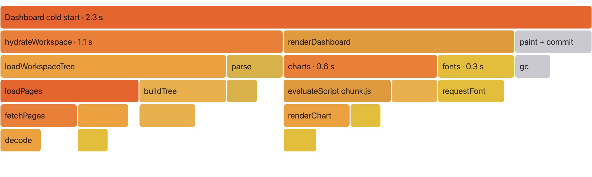

lumen-web · cold start profile
Dashboard cold start
Today–
→
With the three fixes–
| Reading trace.json… |
Main thread, first 2.3 s

Suggested fixes
- Hydrate the open Project first and load the rest of the tree after first paint.
- Split the charts bundle by route so the dashboard stops parsing 840 KB up front.
- Preload the font and swap it in on load instead of blocking render.